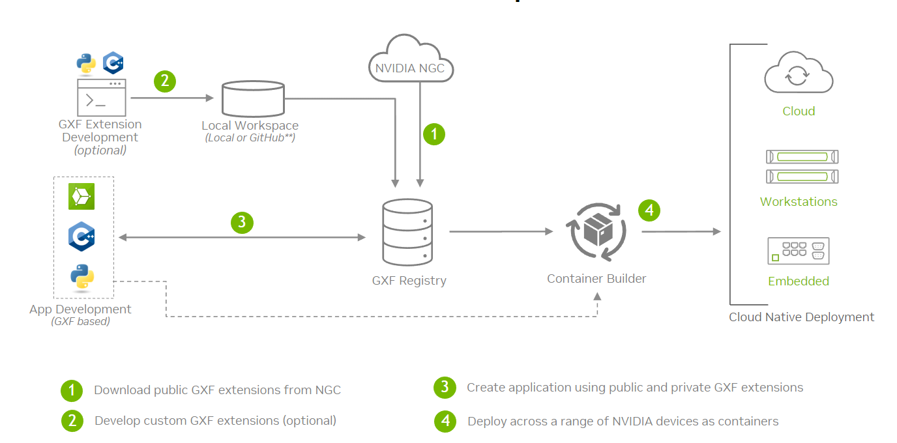

Extension Development Workflow#
The graph composer tool can be used to create an application using GXF standard or public extensions. However, quite often, a custom codelet may also be required to be developed based on specific needs. This workflow is for custom extension developers. It allows developers to implement new functionality and add business logic to applications through graph.
There are two options to for developing extensions and application graphs:
Native workstation
DeepStream SDK devel container image
When developing on native workstation, install pre-requisites for extension generation and build:
/opt/nvidia/graph-composer/extension-dev/install_dependencies.sh
sudo apt-get update && sudo apt-get -y install libtool autoconf gtk-doc-tools
Using the DeepStreamSDK development container image. The image has all the dependencies already installed:
docker pull nvcr.io/nvidia/deepstream:7.1-gc-triton-devel
xhost +
docker run -it --entrypoint /bin/bash --gpus all --rm --network=host -e DISPLAY=${DISPLAY} -v /tmp/.X11-unix/:/tmp/.X11-unix --privileged -v /var/run/docker.sock:/var/run/docker.sock nvcr.io/nvidia/deepstream:7.1-gc-triton-devel
In both the cases, either commandline or Composer UI can used. To launch composer, run:
composer
Note
When using the Composer from the devel container image, users could have a problem browsing the “/” folder from the file browser, in this case they can just type the file path directly or copy and paste it.

Sync Extensions#
Before any extension can be built or graph created, extensions from NGC public repo must be sync’ed. Follow the steps below to sync the extensions:
Using commandline#
Sync published extensions from NVIDIA Cloud repository using following command:
registry repo sync -n ngc-public
Check the extensions using following commands:
registry extn list
registry comp list
Refer to the Registry Command Line Interface for more commands.
Using Composer UI#
Open the Registry menu from the menubar at the top and click on Sync Repo

Select ngc-public from the drop-down list and click on Sync

Composer will report the current status using a progress bar

Once the extension sync is complete, composer will display a success message.

On clicking close, composer will automatically refresh component list and the refreshed list can be seen in the component list window on the right

Develop New Extension#
Using commandline#
Sample GXF Extension#
Graph Composer package provides a useful tool to help create new extensions and components.
The extension-dev project located at /opt/nvidia/graph-composer/extension-dev/ helps create the
boiler plate code required to create custom extensions. Check LICENSE.txt for the corresponding licenses.
A script has been provided to generate a sample extension with a codelet and a graph to test the extension within an application. The generated extension contains a single codelet component that logs a message in the start() and tick() methods once and the graph finishes execution. To use the script, run the following commands.
Generate sample extension called test with a codelet named HelloWorld
$ python3 /opt/nvidia/graph-composer/extension-dev/generate_codelet.py \
--output_dir /tmp/ --extn_name test --codelet_name HelloWorld
$ cd /tmp/test
Within the target directory, the following files are autogenerated: codelet (component), extension and an application. The BUILD files needed to generate the extension libraries using bazel build system are also generated.
1.
2|____WORKSPACE
3|____.bazelrc
4|____apps
5| |____app.yaml
6|____extensions
7| |____test
8| | |____BUILD
9| | |____HelloWorld.hpp
10| | |____test.cpp
11| | |____HelloWorld.cpp
Header file - hello_world.hpp
#pragma once
#include "gxf/std/codelet.hpp"
namespace sample {
namespace test {
// Logs a message in start() and tick()
class HelloWorld : public nvidia::gxf::Codelet {
public:
gxf_result_t start() override;
gxf_result_t tick() override;
gxf_result_t stop() override { return GXF_SUCCESS; }
};
} // namespace test
} // namespace sample
cpp file - hello_world.cpp
#include "HelloWorld.hpp" // NOLINT
namespace sample {
namespace test {
gxf_result_t HelloWorld::start() {
GXF_LOG_INFO("HelloWorld::start");
return GXF_SUCCESS;
}
gxf_result_t HelloWorld::tick() {
GXF_LOG_INFO("HelloWorld::tick");
return GXF_SUCCESS;
}
} // namespace test
} // namespace sample
extension cpp file - test.cpp
#include "HelloWorld.hpp"
#include "gxf/std/extension_factory_helper.hpp"
GXF_EXT_FACTORY_BEGIN()
GXF_EXT_FACTORY_SET_INFO(0xd8629d822909316d, 0xa9ee7410c8c1a7b6, "test",
"A Dummy Example", "", "1.0.0", "NVIDIA");
GXF_EXT_FACTORY_ADD(0xd39d70014cab3ecf, 0xb397c9d200cf9e8d, sample::test::HelloWorld,
nvidia::gxf::Codelet, "Dummy example source codelet.");
GXF_EXT_FACTORY_END()
Build the extension for both x86 (default) and the aarch64 (jetson) platforms. The tool also generates a workspace file which creates a bazel workspace to compile and execute the extension. It also includes a target for registering the extension to the local workspace. The extension can then be used from Composer to create graph or by container builder to deploy the graph.
`
$ cd <extension_path>
$ bazel build ... # For building x86 variant
$ bazel build ... --config=jetson # For building jetson(aarch64) variant
`
Sample GXF Application#
The tool also generates a sample application which executes the HelloWorld codelet 10 times and exits.
application yaml file - apps/app.yaml
%YAML 1.2
---
dependencies:
- extension: test
uuid: d8629d82-2909-316d-a9ee-7410c8c1a7b6
version: 1.0.0
---
name: source
components:
- name: signal
type: sample::test::HelloWorld
- type: nvidia::gxf::CountSchedulingTerm
parameters:
count: 10
---
components:
- type: nvidia::gxf::GreedyScheduler
parameters:
realtime: false
max_duration_ms: 1000000
Entities are defined in the yaml file. Each entity will have one or more components associated with it. Any entity defined in the yaml file needs to be scheduled by a scheduler. The sample makes use of Greedy Scheduler. All schedulers are associated with a clock and RealtimeClock is chosen.
Running the sample application#
Graph Composer package provides tool to execute applications. The execute_graph.sh script located
at /opt/nvidia/graph-composer/execute_graph.sh helps install the graph using registry and then executes it.
$ /opt/nvidia/graph-composer/execute_graph.sh --help
$ /opt/nvidia/graph-composer/execute_graph.sh -d /opt/nvidia/graph-composer/config/target_x86_64.yaml apps/app.yaml
This will print the following logs generated by the test component among others
1 INFO extensions/test/HelloWorld.cpp@9: HelloWorld::start
2 INFO extensions/test/HelloWorld.cpp@14: HelloWorld::tick
Replace implementation in tick() and start() with custom implementation.
Generate an extension for GXF wrapper of GstElement#
This requires the DeepStream 7.1 SDK and Reference Graphs package to be installed or use DeepStream 7.1 devel container image.
Create a text file containing the list of GStreamer elements for which the extensions are to be generated, with name of one element per line. The listed elements must be installed on the system. Following is an example:
timeoverlay filesrc filesink
To list all the GStreamer elements installed on the system, run
gst-inspect-1.0
Next, to generate the extension source code, run
python3 /opt/nvidia/deepstream/deepstream/tools/graph_extension_generator/generate_extensions.py <element_list.txt> <output-directory>
Navigate to the output directory
cd <output-directory>
Run the following command to build and register the extension for x86_64
bazel build ...
Run the following command to build and register the extension for Jetson
bazel build ... --config=jetson
Note
If the extension build fails because of git clone errors from freedesktop gitlab repository with errors like
fatal: unable to access 'https://gitlab.freedesktop.org/gstreamer/common.git/': server certificate verification failed. CAfile: none CRLfile: none,
temporarily disable git SSL verification by running export GIT_SSL_NO_VERIFY=true before running bazel build command
Using Composer UI#
Composer UI currently supports generating DeepStream (GStreamer) based extensions only.
Note
If the Deepstream SDK package is not installed, Generate Extension button will be disabled.
To start, open the Tools menu from the menubar at the top and select Generate Extension.

This will launch the Extension Generator dialog. The extension generator needs some dependencies to be installed.
This can be done by clicking on the Install Dependencies button. This only needs to be done once on a machine. This
is not required when running from the DeepStreamSDK development docker since the dependencies pre-installed.

Next, type in the comma-separated list of GStreamer elements for which corresponding extensions must be generated. Select the output directory using the file browser.
Click on Generate first to generate the extension source code at the selected directory and then
Build to build and register the extensions. The progress will be reported via logs in the console
window.

Note
If the extension build fails because of git clone errors from freedesktop gitlab repository with errors like
fatal: unable to access 'https://gitlab.freedesktop.org/gstreamer/common.git/': server certificate verification failed. CAfile: none CRLfile: none,
temporarily disable git SSL verification by:
Closing the composer and then
export GIT_SSL_NO_VERIFY=truebefore starting the composer from the same shell sessionOR
git config --global http.sslVerify falseto disable git SSL verification machine-wide and retryingBuild. This does not require the composer to be restarted. To re-enable, rungit config --global http.sslVerify true.
After extension build is done, newly added extensions will appear in the component list
Create and test graph#
Drag and drop newly created components from the component list to the graph window and link to other components to create a complete application.

Save and execute the graph as demonstrated in Graph Composer